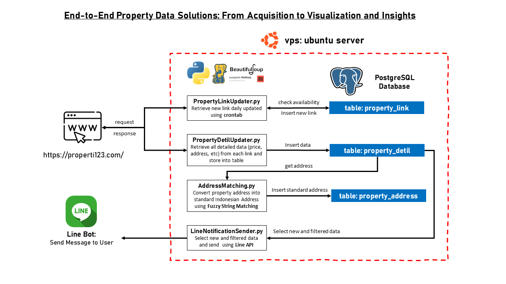

End-to-End Property Data Solutions

Project Introduction
This project automates the full pipeline of real estate data management for Properti123.com — from web scraping and data cleaning to database storage and real-time user notification. Built to ensure data freshness and user engagement without manual intervention, it leverages Python, PostgreSQL, BeautifulSoup, Fuzzy Matching, and LINE Messaging API on an Ubuntu-based VPS server.
Pipeline Stages
1. Data Acquisition
Scraping new property listings daily using BeautifulSoup, requests, and Selenium (if dynamic content detected).
2. Data Transformation
Standardizing and enriching raw addresses using TheFuzz (fuzzy string matching) for more reliable downstream analytics.
3. Data Storage
Structured data is inserted into PostgreSQL tables: property_link, property_detail (38+ fields), and property_address.
4. User Notification
Filtered and formatted results are automatically pushed to users daily through a custom Line Bot integration.
Database Structure
The property_detail table captures comprehensive property attributes, crucial for data-driven decision making. Key fields include:
- Property ID (Primary Key)
- Property Type (House, Apartment, Land)
- Price, Negotiability, Certification Type
- Dimensions: Building Area, Land Area, Bedrooms, Bathrooms
- Electricity Power, Garage, Direction (e.g., Facing North)
- Additional Features: Garden, Terrace, Balcony, etc.

Technology Stack
- Backend: Python 3.10 (Requests, BeautifulSoup4, Selenium)
- Database: PostgreSQL 14
- Notification: LINE Messaging API (Python SDK)
- Server: Ubuntu 22.04 VPS
- Automation: Crontab (Scheduled Execution)
- Version Control: Git (Private GitHub Repo)
Challenges & Solutions
1. Dynamic Content Scraping
Some property details were loaded dynamically via JavaScript. To solve this, Selenium WebDriver was used for pages where static HTML scraping failed.
2. Inconsistent Address Formatting
Raw scraped addresses were messy and varied. Implemented fuzzy string matching to align addresses against a curated master list for consistent geospatial analysis.
3. Avoiding Duplicate Records
Implemented upsert logic (ON CONFLICT DO UPDATE) in PostgreSQL to ensure no duplicate property IDs are stored while updating new details when listings are refreshed.
4. Server Resource Management
Scripts were optimized to run during off-peak server hours to avoid conflict with other hosted applications, and connection pooling was used to manage database performance.
Automation and Scheduling
Using crontab on the Ubuntu VPS server, the entire pipeline (scraping, processing, storing, notifying) is fully automated to run once daily at 06:00 AM.
0 6 * * * /usr/bin/python3 /path/to/scraper_script.py >> /var/log/property_scraper.log 2>&1